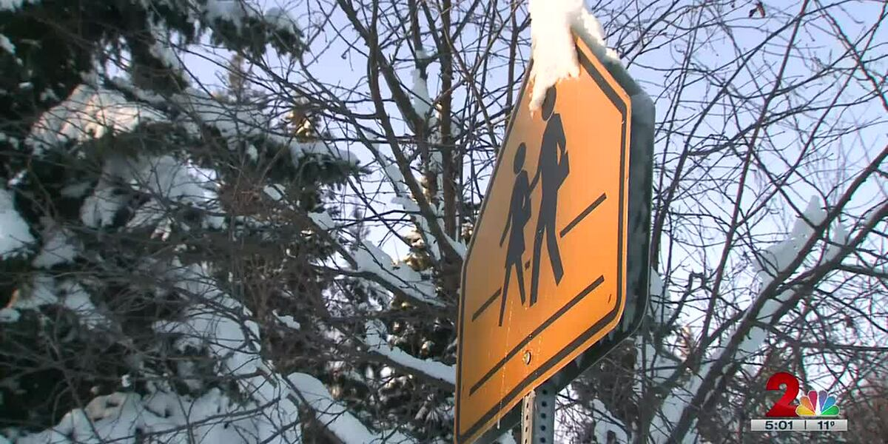
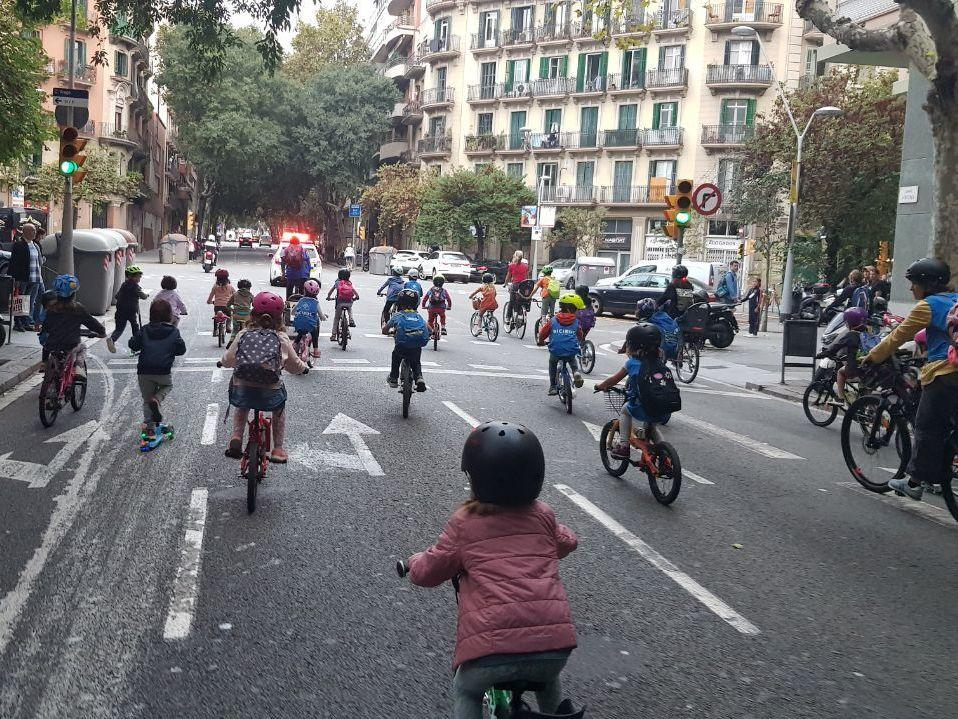

Unit 2 · Teacher review edition
Real Journeys to School
Real children. Different journeys. Sometimes, a very different school day.
A Snow Day, a Screen and a Shovel
It is November 9, 2023. A snowstorm makes the roads in Anchorage dangerous. Kali cannot go to school today. Her teacher reads a story to the class online, from his couch. The book is about a snowy day! Kali misses school and finds online learning harder. She also goes outside to clear snow from the driveway. She wants to earn some money.

Hebrew support & teacher notes
9 בנובמבר 2023. סופת שלג הופכת את הכבישים באנקורג׳ למסוכנים. קאלי אינה יכולה להגיע היום לבית הספר. המורה שלה מקריא לכיתה סיפור באינטרנט, מהספה שלו. הספר עוסק ביום מושלג! קאלי מתגעגעת לבית הספר וקשה לה יותר ללמוד מרחוק. היא גם יוצאת החוצה לפנות שלג משביל הגישה. היא רוצה להרוויח קצת כסף.
אירוע מתועד המסופר בהווה סיפורי. אין להסיק שקאלי בדרך כלל נוסעת באוטובוס או שכך פועלים כיום בכל יום שלג.
Why does Kali stay home?
Answer
The storm makes the roads dangerous.
Where does her teacher read?
Answer
On his couch, online.
Why does Kali clear the snow?
Answer
She wants to earn money.
A Horse Before Class
Carlito lives in Patagonia, Argentina. His school is eighteen kilometres from home. Every school day, he rides a horse through the mountains. His little sister Micaela goes with him. Their horse is called Chiverito. The weather can make the journey difficult. Carlito wants to become a vet.
Hebrew support & teacher notes
קרליטו גר בפטגוניה שבארגנטינה. בית הספר שלו נמצא שמונה־עשר קילומטרים מהבית. בכל יום לימודים הוא רוכב על סוס דרך ההרים. אחותו הקטנה מיקאלה נוסעת איתו. לסוס שלהם קוראים צ׳יבריטו. מזג האוויר עלול להקשות על הדרך. קרליטו רוצה להיות וטרינר.
תיאור שגרת התיעוד, ללא דיאלוג או רגשות שהומצאו. הגילים מתייחסים למועד התיעוד; אין לטעון שהוא תלמיד כיום.
Who travels with Carlito?
Answer
His sister Micaela.
How far is his school?
Answer
Eighteen kilometres.
Which detail connects his journey with his dream?
Answer
He rides a horse and wants to become a vet.
Four Kilometres Together
Samuel lives in India. He uses a wheelchair to get to school. His two younger brothers help him along the way. They push and pull the chair for four kilometres. The route includes sand, rivers and palm trees. A wheelchair journey is part of their school routine. Samuel and his brothers make this long journey together.
Hebrew support & teacher notes
סמואל גר בהודו. הוא משתמש בכיסא גלגלים כדי להגיע לבית הספר. שני אחיו הצעירים עוזרים לו בדרך. הם דוחפים ומושכים את הכיסא לאורך ארבעה קילומטרים. המסלול כולל חול, נהרות ועצי דקל. נסיעה בכיסא גלגלים היא חלק משגרת בית הספר שלהם. סמואל ואחיו עושים את הדרך הארוכה הזאת יחד.
תיאור שגרת התיעוד. אין להוסיף פציעה, חילוץ או דיאלוג שלא תועדו. אין להסיק שזה מסלול אופייני לכל ילדי הודו.
Who helps Samuel?
Answer
His two younger brothers.
Name one feature of the route.
Answer
Sand, rivers or palm trees.
Why is this journey a shared task?
Answer
His brothers help push and pull the chair.
The School Boat
Zoe and Isaac live on Bryher, a small island. Their school is on nearby Tresco. Every morning, they meet the other children at the place where the boat stops. The boat journey takes only five minutes. Sometimes they see dolphins. After the boat arrives, they walk to school. For these children, going to class means crossing the sea.
Hebrew support & teacher notes
זואי ואייזק גרים בברייר, אי קטן. בית הספר שלהם נמצא בטרסקו הסמוך. בכל בוקר הם פוגשים את הילדים האחרים במקום שבו הסירה עוצרת. השיט נמשך רק חמש דקות. לפעמים הם רואים דולפינים. לאחר שהסירה מגיעה הם הולכים לבית הספר. עבור הילדים האלה, ההגעה לכיתה כוללת חציית ים.
מקור BBC משלב מנחה בדיוני בדמות עכבר. העיבוד משתמש רק בפרטי השגרה של הילדים ובמקומות הממשיים, ומשמיט את עלילת המנחה.
Why do they need a boat?
Answer
Their school is on another island.
How long is the boat journey?
Answer
Five minutes.
Do they always see dolphins?
Answer
No. Sometimes.
A Bus Without a Bus
On Fridays, some children in Barcelona ride to school together. Parents go with them. This group is called a bike bus. It has stops where more families join. The full ride takes approximately twenty-five minutes. Police help protect the group on the busy road. One mother rides with her five-year-old son. The regular Friday journey gives them company on the way to school.

Hebrew support & teacher notes
בימי שישי חלק מהילדים בברצלונה רוכבים יחד לבית הספר. ההורים מצטרפים. לקבוצה קוראים אוטובוס אופניים. יש לה תחנות שבהן מצטרפות משפחות נוספות. המסלול המלא נמשך בערך עשרים וחמש דקות. המשטרה עוזרת להגן על הקבוצה בכביש העמוס. אֵם אחת רוכבת עם בנה בן החמש. הדרך הקבועה ביום שישי מספקת להם חברה בדרך לבית הספר.
שגרת יום שישי שתועדה ב־2021, לא טענה שכל הילדים רוכבים כך בכל יום. שמו של הילד לא פורסם ואין להמציאו.
When does the group ride?
Answer
On Fridays.
Why does it have stops?
Answer
More families join there.
How does the group make the journey different?
Answer
Children travel with other families and police help protect them.